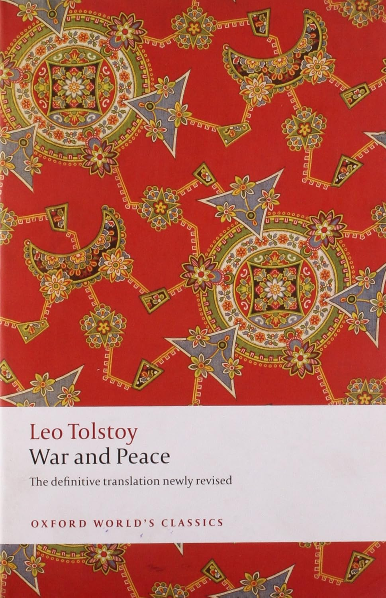
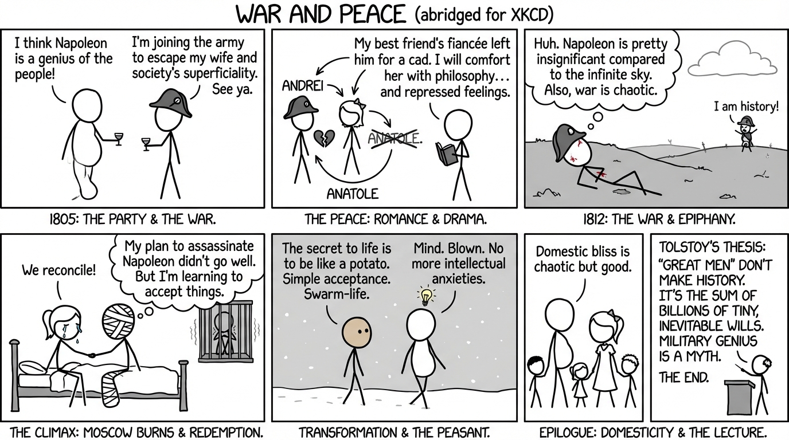

isbn-13: 9780192833983
Audible
AI Generated Content
Generated by gemini-3-pro-preview

Leo Tolstoy’s War and Peace is a sprawling epic that chronicles the French invasion of Russia and the impact of the Napoleonic era on Tsarist society through the stories of five Russian aristocratic families: the Bezukhovs, the Bolkonskys, the Rostovs, the Kuragins, and the Drubetskoys. First published in its entirety in 1869, the work defies standard classification, blending historical fiction with philosophical essays. The narrative arc spans from 1805 to 1820, moving between the salons of St. Petersburg and the brutal battlefields of Austerlitz and Borodino.
The plot begins in July 1805 at a soirée hosted by Anna Pavlovna Scherer. Here, the reader is introduced to the illegitimate Pierre Bezukhov, a socially awkward intellectual who champions Napoleonic ideals, and Prince Andrei Bolkonsky, an intelligent but disillusioned man seeking escape from his stifling marriage and societal superficiality by joining the army as an aide-de-camp to General Kutuzov. As the narrative unfolds, Pierre inherits his father’s vast fortune and the title of Count, making him the most eligible bachelor in Russia. He falls into a disastrous marriage with the beautiful but manipulative Hélène Kuragina. Meanwhile, Andrei participates in the Battle of Austerlitz. After being wounded, he undergoes a profound spiritual realization while gazing at the sky, realizing the insignificance of his former hero, Napoleon, compared to the infinite heavens.
During the intervening years of peace, the lives of the protagonists intersect with the Rostov family. Natasha Rostova, the embodiment of vitality and spontaneity, becomes the novel’s emotional center. Andrei, a widower following the death of his wife in childbirth, falls in love with Natasha, seeing in her a chance for renewal. However, a year-long engagement imposed by Andrei’s father leads to a crisis; Natasha is seduced by Hélène’s dissolute brother, Anatole Kuragin, and attempts to elope. The engagement is broken, leaving Natasha disgraced and Andrei bitter. Pierre, who has been searching for meaning through Freemasonry and philanthropy, acts as a comforting friend to Natasha, suppressing his own love for her.
The narrative reaches its climax with Napoleon’s invasion of Russia in 1812. The Battle of Borodino serves as a focal point where the varying threads of the story collide. Pierre, seeking to understand the war, wanders the battlefield in civilian clothes, witnessing the chaotic reality of combat which contrasts sharply with military strategy. Prince Andrei is mortally wounded by an exploding shell. Following the battle, the Russians abandon Moscow. The Rostovs flee the city, taking wounded soldiers with them, unknowingly including Prince Andrei. In a moment of redemption, Natasha nurses the dying Andrei, and they reconcile before he succumbs to his wounds.
Pierre remains in Moscow, intent on assassinating Napoleon, but is captured by the French. During his imprisonment and the subsequent harrowing retreat of the French army, Pierre undergoes a final transformation. He meets Platon Karataev, a simple peasant soldier who embodies a philosophy of acceptance and living in the moment. This interaction helps Pierre strip away his intellectual anxieties and find spiritual peace.
The novel concludes with two epilogues. The first, set in 1820, depicts the domestic lives of the survivors. Pierre has married Natasha, and they live a happy, chaotic family life. Nikolai Rostov has married Andrei’s pious sister, Princess Marya Bolkonskaya, rebuilding the family fortunes. The second epilogue moves away from the narrative entirely to present Tolstoy’s historiographical thesis. He argues against the “Great Man” theory of history, positing that historical events are not caused by the will of leaders like Napoleon or Alexander I, but by the sum of infinitely small individual wills and an inevitable, deterministic chain of cause and effect.
The character development in War and Peace is extensive, focusing primarily on the spiritual journeys of Pierre and Andrei. Pierre evolves from a dissipated, naive youth into a man of moral substance. His journey is one of trial and error; he tries dissipation, Freemasonry, and heroism, but ultimately finds wisdom in the simplicity of Karataev and the domestic love of Natasha. Tolstoy writes of Pierre’s realization: “Man can be master of nothing while he fears death, but he who does not fear it possesses all.”
Prince Andrei represents the intellectual and cynical path. He seeks glory, then administrative utility, and finally domestic happiness, but finds them all lacking. His development is defined by his encounters with death—first at Austerlitz and finally at Borodino—which lead him to a detached, universal love that is incompatible with earthly life. Natasha Rostova transforms from a child of impulse and joy into a woman humbled by suffering, eventually finding fulfillment in the role of a matriarch, having discarded the social graces of her youth.
Tolstoy also juxtaposes historical figures to serve his thematic ends. Napoleon is depicted as arrogant and deluded, believing he controls history while actually being a puppet of it. In contrast, the Russian commander Kutuzov is portrayed as wise and passive; he understands that he cannot direct the “swarm-life” of the army but can only align himself with the inevitable flow of events.
A central theme of the work is the search for the meaning of life, contrasted against the artificiality of high society. Tolstoy validates the “real” life of nature, peasantry, and honest emotion over the “artificial” life of court politics and military theorizing. This is evident in the dichotomy between the authentic Rostovs and the artificial Kuragins.
The philosophy of history is the novel’s other major theme. Tolstoy relentlessly attacks the idea that military genius determines outcomes. He suggests that battles are won by the spirit of the common soldier rather than the tactics of generals. As Prince Andrei notes before Borodino: “Success never depends, and never will depend, on position, on equipment, or even on numbers, and least of all on position… Success depends on the feeling that is in me and in him, in each soldier, and in the battalion.”
War and Peace ultimately presents a holistic view of human existence, suggesting that while individuals have no control over the grand sweep of history, they possess the free will to choose moral action and find happiness in the immediate reality of their daily lives.
Quotes
Influence in society, however, is capital which has to be economized if it is to last. Prince Vasili knew this, and having once realized that if he asked on behalf of all who begged of him, he would soon be unable to ask for himself, he became chary of using his influence.
’Never, never marry, my dear fellow! That’s my advice: never marry till you can say to yourself that you have done all you are capable of, and until you have ceased to love the woman of your choice and have seen her plainly as she is, or else you will make a cruel and irrevocable mistake. Marry when you are old and good for nothing—or all that is good and noble in you will be lost. It will all be wasted on trifles.
Pierre was always astonished at Prince Andrei’s calm manner of treating everybody, his extraordinary memory, his extensive reading (he had read everything, knew everything, and had an opinion about everything), but above all at his capacity for work and study.
Even in the best, most friendly and simplest relations of life, praise and commendation are essential, just as grease is necessary to wheels that they may run smoothly.